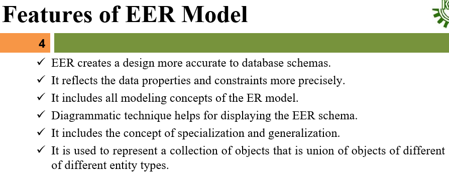

It's basically an advance tools of ER Model called as EER Model



Specialization- The process of designating subgroupings within an entity set is called Specialization. An entity set may be specialized by more than one distinguished features.Er-design, specialization is depicted by a Triangle component labeled ISA(is a).
- Its a top-down approach.

Generalization- The commonality can be expressed by Generalization,which is a containment relationship that exists between a higher-level entity set and one or more lower level entity set.
- Here a crucial property is attribute inheritance.
- It's simply inversion of specialization.


Aggregation- One limitation of the ER model is that it can not express relationship among relationships.
- Aggregation abstracts a relationship between objects and viewing the relationship as an object